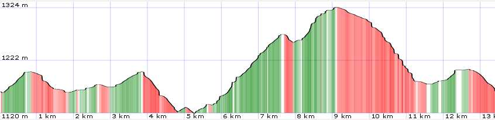
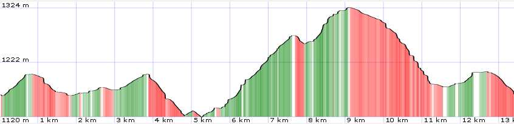

Scheda informativa
Mappa

| Campo dati | Nota |
|---|---|
| numero traccia | 011 |
| adatto per |
|
| grado di difficoltà |
|
| lunghezza | 13 km |
| tempo di percorrenza a piedi | 3h 30' |
| dislivello | 300 mt D+ e 300 mt D- |
| periodo consigliato |
|
| tipo di fondo | strada sterrata |

